Dois cardápios, uma casa
De dia, cafeteria e bistrô.
À noite, bar e drinks.
Na mesa
Feito para ser fotografado
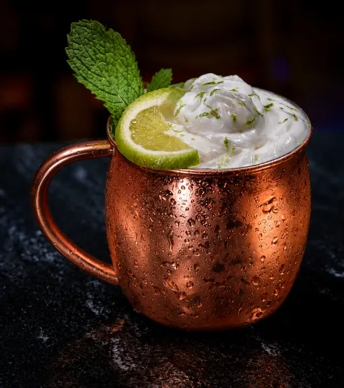
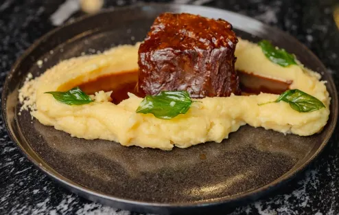
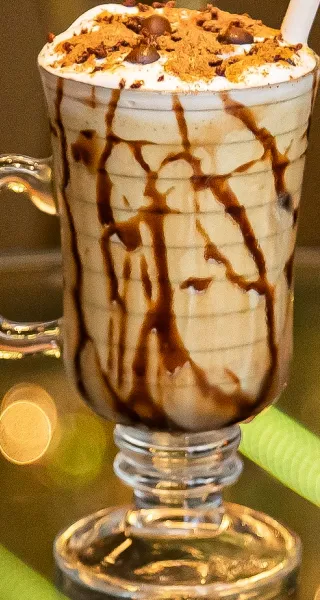
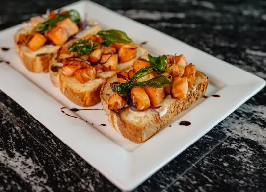
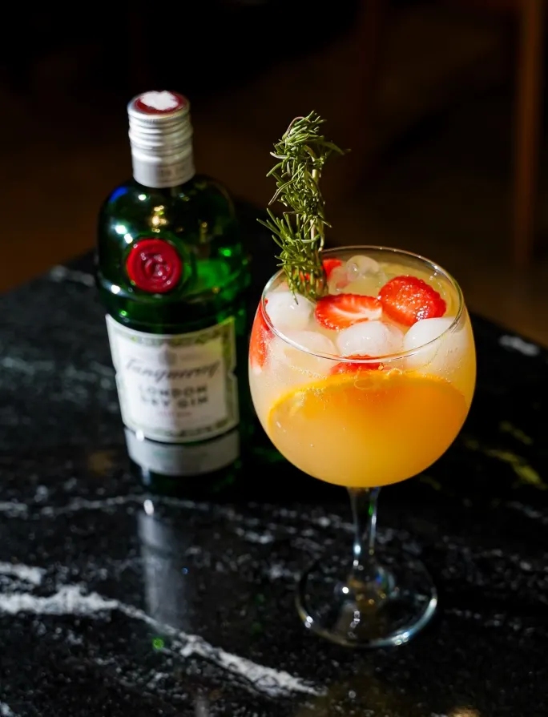
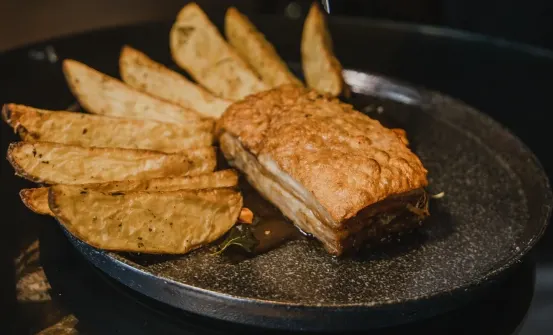
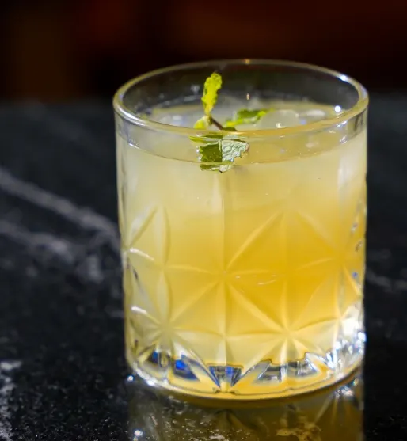
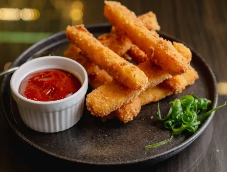
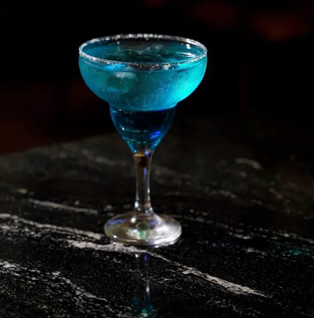
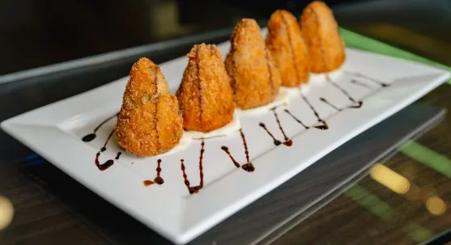
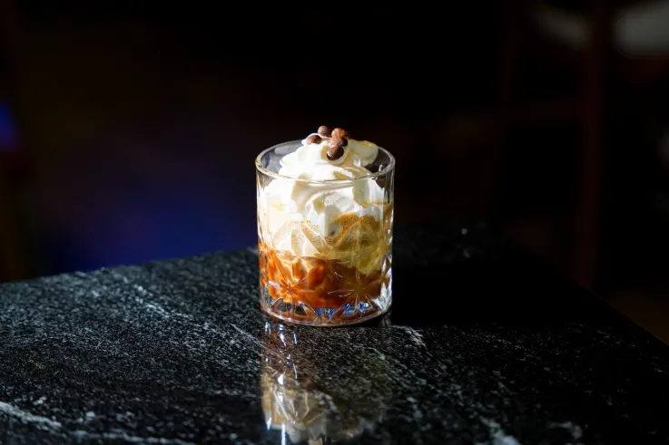
“Aqui o café da manhã vira almoço, o almoço vira happy hour e o happy hour termina em brinde. Cafeteria, bistrô e bar no mesmo endereço, com receitas do sertão e de outros cantos do mundo.”